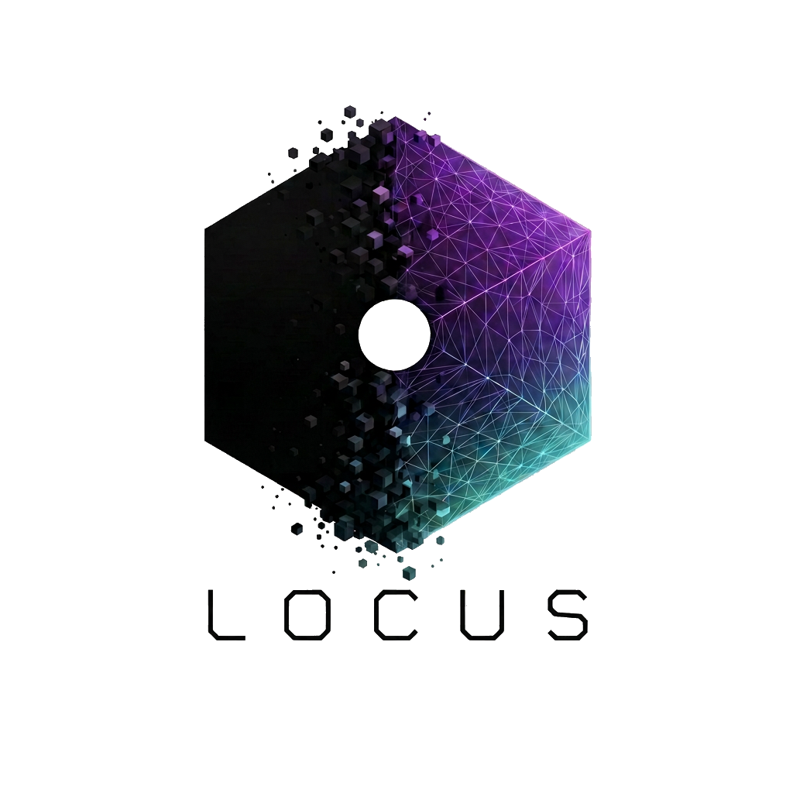

The ground
beneath
the signal.
Agents are stateless. Context evaporates. Locus gives cognitive state a coordinate — typed, persistent, and verifiable across every session, model, and transport.
Not a product.
Infrastructure.
Locus is the standalone memory layer for the STTP protocol. It handles storage, retrieval, validation, and transport — so everything built on top can treat memory as a solved problem.
MCP server for assistants. HTTP/gRPC gateway for services. Rust SDK for in-process embedding. CLI for operators. One contract, every surface.
Every node is self-sufficient.
Four ordered layers. Layer order is semantic — reordering alters meaning. Every field typed. Every confidence annotated. A stateless receiver needs nothing else.
strict profile fails closed · tolerant profile recovers with diagnostics · additive evolution — old nodes always survive
Like NAND gates —
compose into anything.
Each primitive is deterministic, transport-neutral, and policy-explicit. Combine them into any memory workflow. The composition layer is just primitives, wired.
Filter, sort, and paginate nodes with explicit scope. No ranking — pure predicate logic. Stable sort semantics.
AVEC-driven ranked retrieval. Surfaces nodes that resonate with the current cognitive state — optionally amplified by semantic signal.
Grouped statistics and rollups across time windows. The foundation of daily, weekly, and monthly timeline compression.
Bulk mutation with dry-run support. Embedding backfill, schema migration, reindexing — bounded, explicit, reversible.
Stage-level visibility into the retrieval pipeline. Know exactly why a node was returned — or wasn't. Every decision, auditable.
Runtime capability discovery. Dynamic UIs and agent planners ask the schema what's possible — no hardcoded assumptions.
Context doesn't disappear.
It compresses.
Raw sessions accumulate. Locus aggregates them into daily rollups, weekly summaries, monthly signals — each tier retaining the attractor fingerprint of what came before. The signal survives. The noise doesn't.
memory_aggregate rolls up tiers · memory_recall retrieves across all tiers simultaneously · AVEC fingerprint survives every compression
From intent
to primitive.
An agent — or a human — asks something. Locus maps it to the right primitive automatically. Here's what that looks like under the hood.
The attractor
vector.
Every node carries an AVEC — a four-dimensional fingerprint of cognitive state at the moment of encoding. Recall surfaces nodes that resonate with the current state, not just keyword matches.
ψ coherence is derived — not stored. A receiving agent computes it independently, verifying drift without shared history.
Built on STTP. Powers Resonantia.
Locus is the infrastructure STTP agents stand on. Any agent, tool, or service that speaks STTP can use Locus as its memory layer.
-v "$PWD/locus-data:/data" \
ghcr.io/entasislabs/locus-mcp:0.1.0